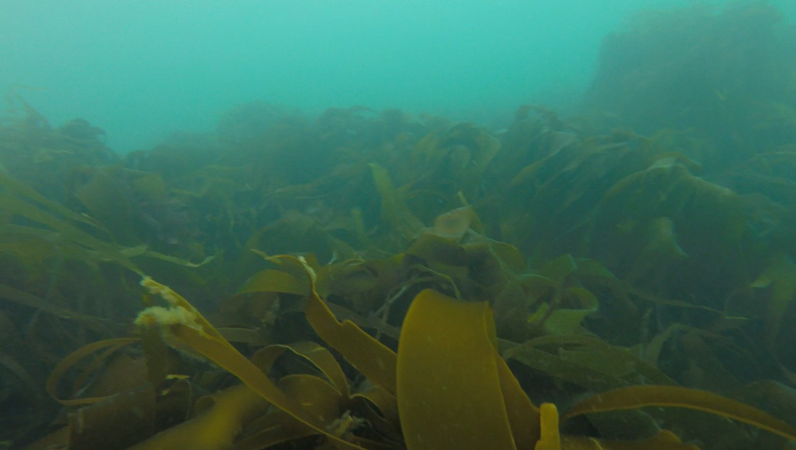
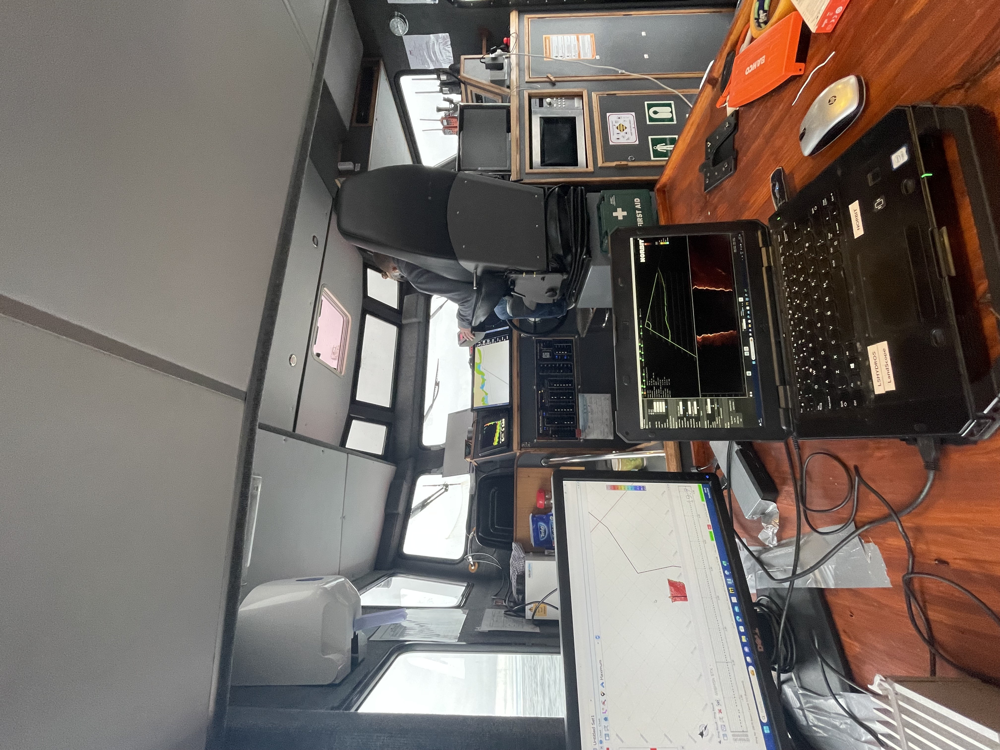

Services

Environmental Mapping
Application of novel signal and image processing techniques to remote sensing data for environmental monitoring projects.

Acoustic Data Research
Assistance in equipment and software trials for research purposes, focusing on performance validation and technical certainty.

Desk-Based Assessments
Providing independent technical reviews, survey feasibility studies, and specialist reporting for academic and conservation projects.